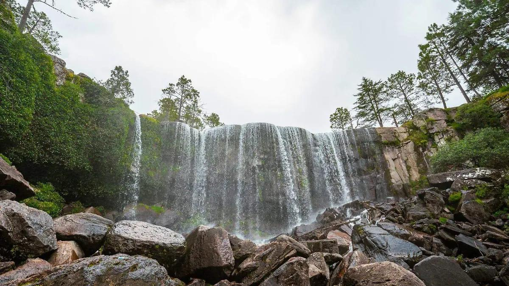
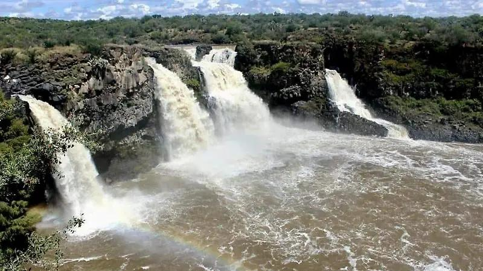
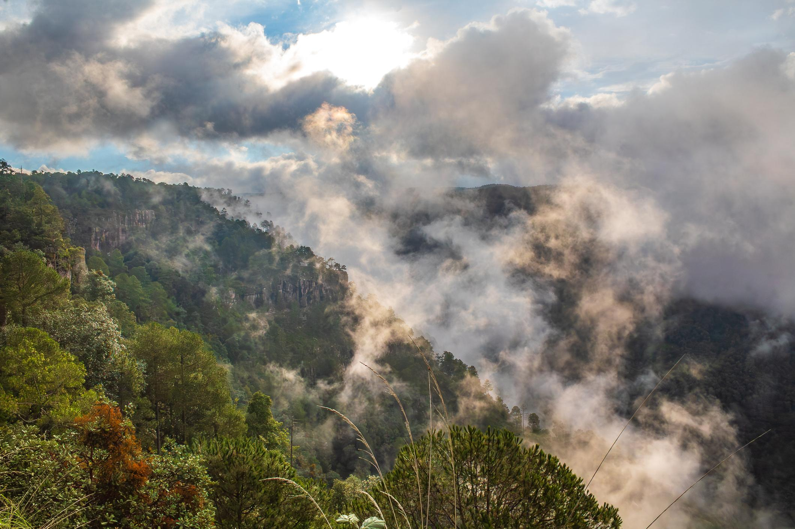

Parque Natural Mexiquillo

Mexiquillo es un destino natural de Durango conocido por sus bosques, formaciones rocosas y paisajes. Es un lugar ideal para disfrutar de la naturaleza.
Cascada El Saltito

El Saltito se encuentra en el municipio de Nombre de Dios. Es conocido por su cascada y su entorno natural.
Los bosques de Durango

Los bosques de la Sierra Madre Occidental son importantes por su biodiversidad y sus paisajes.